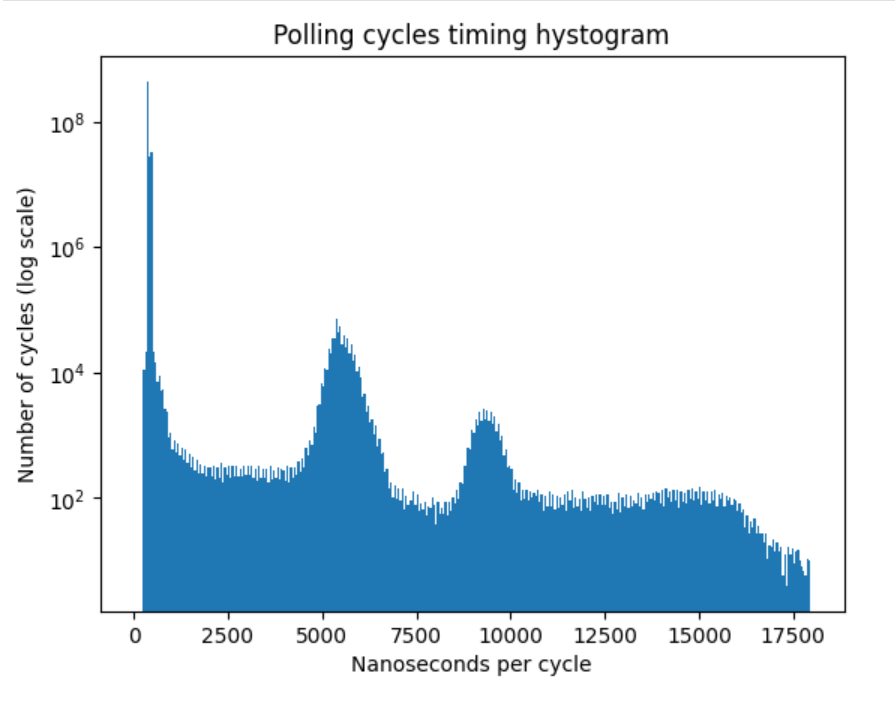

FPGA-Driven data streaming into Raspberry Pi through GPIO: Speed and timing stability. Part 1
Introduction
GPIO could be considered one of the options for transferring data at a relatively fast speed into single-board computers (SBCs), such as the Raspberry Pi. Possible applications include capturing radio signals for software-defined radio (SDR) or processing data from a microphone array: each microphone typically captures up to 48K samples per second, and having a few tens or even hundreds of microphones can result in a significant transfer rate that needs to be managed.
SBCs, like the Raspberry Pi 4, have substantial computing power and typically a few gigabytes of RAM, in addition to exposed GPIO pins. The latter makes it easy to connect them to external devices. Thus, using them as the core of a high-speed data acquisition and processing system seems attractive.
There are two main approaches for transferring data to/from an SBC via GPIO: polling (also known as bit-banging) and using DMA. Surprisingly, both can be done in user space on RPi (although elevated privileges are needed). As shown in https://github.com/hzeller/rpi-gpio-dma-demo, polling is faster, so we will use polling in our experiments.
In ARM-based systems peripherals, such as UART, SPI, GPIO are typically memory-mapped, so we can access them by reading and writing to the physical memory addresses corresponding to the peripheral registers. In order to get access to the memory-mapped GPIO registers, we use mmap to map the /dev/mem file (which provides physical view of the memory) into the program's address space.
One of the challenges with polling, though, is that SBCs typically run Linux or another general-purpose operating system, so the CPU is a shared resource, and the system will interrupt our bit-banging process from time to time, causing the data flow to stop. Consequently, the data stream has to be buffered on the device side.
We will consider a strategy to minimize interruption of the polling process and try see what transfer rate we can acheive this way. We will also estimate the interruption time and the required buffer size on the device side which will allow not to loose any data.
Reseving a CPU core for polling. Keeping the CPU frequency at maximum
Turns out that the Linux kernel allows to "set aside" one or a few CPU cores, so the operation system won't schedule any processes to run on that cores by default. However the system is still aware of this "reserved" cores and processes can be explicitly assigned to these cores. There are a few things here we must take into account: first of all, these isolated cores are still interrupted by the system clock. We expect the interruption time to be no more than a few tenths of microseconds, but measuring it is one of the goals of this work.
The kernel command line parameter isolcpu <core> allows to "isolate set of CPU from disturbences".
Let's "isolate" 3rd core of RPi4 CPU "form disturbance": here is my kernel command line params file cmdline.txt:
console=serial0,115200 console=tty1 ...[SKIPPED]... isolcpus=3
The only change I made was adding isolcpus=3 at the end of file.
Now, when you boot into the system you can use a tool like top/htop and confirm that 3rd core is allways idle.
It is possible to explicitly assign a process to that core:
taskset -c 3 yes > /dev/null &
Which starts a dummy process yes > /dev/null on 3rd CPU core. Our strategy is to run the polling process on
the isolated core so we will have minimal interruptions from the OS.
Another important consideration is that Raspberry Pi 4 has Dynamic Voltage and Frequency Scaling (DVFS) feature, so by default the CPU core frequency is lowered when it idles. The frequence scaling policy is controlled by so-called "governors". The default governor is "ondemand", which tries to keep the CPU frequency as low as possible when the system is idle and raises it to the maximum value when the system is under load. In my experiments I found that the task assigned to the isolated core is starting to run slower and after approximatelly 60 milliseconds the speed gets 2-2.5x faster. If we want to get stable and fast cycles we need to change the CPU governor to "performance" mode for the core we want to run on. The performance governor keeps the CPU frequency at the maximum value all the time at the expense of increased power consumption and heat generation. Here is how we can do it:
sudo sh -c "echo performance > /sys/devices/system/cpu/cpu3/cpufreq/scaling_governor"
In this mode the CPU core will run at the maximum frequency all the time.
Measuring setup
To measure transfer rate and timing, we will build a simple timing device based on an FPGA, which has a fast internal counting timer. The device waits for the rising edge of the "Data Req" (data request) line and sets its 21-bit data output to the timer's value and the "Data Rdy" (data ready) line. The polling program detects the change in the "Data Rdy" line, reads and records the 21-bit data value from the parallel bus, and then sets "Data Req" to low on the SBC. This signals to the timing device that the SBC has successfully read the data, prompting it to set "Data Rdy" to low. The polling program detects the falling edge of the "Data Rdy" line and proceeds to the next cycle iteration. The difference in consecutive data reads from the timing device allows us to measure the time between loop iterations. We need to measure two values: the average number of cycles per unit of time (to determine throughput) and the maximum time between two iterations of the loop (to determine the required buffering size).
The reason we use a 21-bit data bus is that we hit the maximum number pins available on Icestick. The number of GPIO pins on the Raspberry Pi is 28, and since the protocol uses 3 lines for control, we have 25 pins remaining on the SBC side.
Here is the wiring diagram of the measuring setup:

and its real-life appearance

The exchange process described above can be visualized as follows:

The polling program (left side of the diagram) is written in C. Here is the source code of the loop:
for (int i = 0; i < size; ++i) { //Set the DATA_REQUEST signal to the device (25th GPIO pin) *(gpio_port + (GPIO_SET_OFFSET / sizeof(uint32_t))) = (1<<25); //Wait for the DATA_READY signal from the device (27th GPIO pin) while((*(gpio_port + (GPIO_LEV_OFFSET / sizeof(uint32_t))) & (1<<27)) == 0); //Read the data from the device, keeping only the lower 24 bits buffer[i] = *(gpio_port + (GPIO_LEV_OFFSET / sizeof(uint32_t))) & 0xFFFFFF; //Clear the DATA_REQUEST signal to the device *(gpio_port + (GPIO_CLR_OFFSET / sizeof(uint32_t))) = (1<<25); //Wait for the DATA_READY signal from the device to be cleared while((*(gpio_port + (GPIO_LEV_OFFSET / sizeof(uint32_t))) & (1<<27)) != 0); }
The FPGA code is written in Verilog. Here is some highlights of the timing device design. The icestick has a 12 MHz reference clock, and we use it with PLL available on the ICE40 FPGA for generatint 50.25 MHz internal "fast" clock. So our timer resolution is approximatelly 20 ns. Here is how we declare the PLL in verilog:
wire clk; //Declare signal for 50.25MHz clock SB_PLL40_CORE #( .FEEDBACK_PATH("SIMPLE"), .PLLOUT_SELECT("GENCLK"), .DIVR(4'b0000), // DIVR = 0 // 12MHz * (DIVF + 1) / (DIVR + 1) = 50.25MHz .DIVF(7'b1000010), // DIVF = 66 .DIVQ(3'b100), // DIVQ = 4 .FILTER_RANGE(3'b001) // FILTER_RANGE = 1 ) pll ( .REFERENCECLK(ref_clk), //Input 12MHz ICEStick clock .PLLOUTCORE(clk), //Output 50.25MHz clock .LOCK(), .RESETB(1'b1), .BYPASS(1'b0) );
The clk signal is 50.25 MHz clock, provides synchronization. The main logic of the timing device (right part
of the exchagne diagram) can be described by the following verilog code:
module transfer_msr( input ref_clk, //ICEStick 12MHz clock input rst, input data_req, output reg data_rdy, output reg [23:0] msr_data ); reg data_req_1; reg data_req_2; reg [23:0] timer_count; wire clk; //...[SKIPPED PLL declaration]... always @(posedge clk) begin if (rst) begin msr_data <= 24'b0; timer_count <= 24'b0; data_req_1 <= 1'b0; data_req_2 <= 1'b0; end else begin // Since the data_req comes from the external source, we need // to synchronize it See Harris, Harris, chapters 3.5.5, 4.4.4 // or https://en.wikipedia.org/wiki/Incremental_encoder#Clock_synchronization if (data_req_1 & ~data_req_2) begin msr_data <= timer_count; end else if (data_req_1 & data_req_2) begin data_rdy <= 1'b1; end else if (~data_req_1) begin data_rdy <= 1'b0; end if (timer_count == 24'hFFFFFF) begin timer_count <= 24'b0; end else begin timer_count <= timer_count + 1; end data_req_1 <= data_req; data_req_2 <= data_req_1; end; end endmodule
I use 24-bit counter because I am having I2S INMP441 microphone array as a possible follow-up project. The resolution of the INMP441 microphone is 24 bits, so I want to have the same resolution for the timer.
Results
The program reads 500M values of the timer from the FPGA and records and dumps the raw 20 lower bits of the timer to a file. I post-processed the file to calculate the time between two consecutive reads, so we can see the distribution of the time intervals.
Some observations: the typical timer increment between reads is aroun 19 timer clicks, here is the first 200 reads
23, 19, 19, 22, 19, 19, 19, 23, 20, 22, 19, 19, 19, 19, 19, 19, 19, 20, 22, 19, 19, 19, 19, 19, 19, 19, 19, 23, 19, 19, 19, 19, 20, 23, 23, 22, 20, 19, 18, 19, 19, 19, 20, 19, 22, 19, 19, 19, 20, 18, 19, 20, 18, 23, 23, 19, 19, 23, 19, 19, 19, 19, 19, 19, 19, 19, 19, 20, 19, 19, 22, 19, 20, 22, 19, 20, 18, 19, 20, 23, 19, 19, 18, 19, 19, 19, 19, 19, 20, 19, 23, 23, 22, 19, 19, 19, 19, 19, 20, 19, 22, 19, 19, 20, 19, 18, 23, 19, 20, 22, 19, 19, 19, 20, 19, 22, 19, 19, 23, 19, 19, 19, 19, 19, 23, 19, 19, 20, 19, 19, 19, 19, 19, 20, 18, 20, 23, 22, 19, 19, 19, 19, 19, 19, 20, 19, 23, 22, 19, 19, 19, 19, 19, 19, 20, 22, 19, 19, 19, 19, 19, 19, 19, 19, 19, 19, 19, 19, 19, 23, 22, 19, 19, 19, 19, 20, 22, 19, 19, 20, 18, 20, 22, 19, 19, 23, 19, 19, 19, 19, 20, 23, 22, 19, 19, 19, 19, 19, 19
Since the timer frequency is 50.25MHz, the typical time between reads is 19/50.25MHz = 0.378us, or approximatelly 2.6M reads per second.
Occasionaly we have a few hundreds or even a couple of thousands of timer clicks between reads, which is probably due to the the OS interrupts.
Here is the histogram which illustrates the distribution of pollng cycles timing for 500M cycles:
Overwhelming majority of the polling cycles are around 400 ns, but when we zoom out the time axis, we see two more peaks: around 5500 ns and 9500 ns
I think the peaks at 5500 ns and 9500 ns are due to the OS interrupts.
That means if we provide the buffer for storing around 12-15 micoseconds of the data on the exteran device side, we can, more or less handle the stream despite of the occasional polling delays. In microphone array application, for 100 microphones with 24-bit resolution, at 48KHz sampling rate, we need to store 100*24*48000 = 115.2M bits per second, or 14.4M bytes per second. So, for 15 microseconds delay we need to provide the buffer of approximatelly 216 bytes, which is more than feasible.
Verilog and C code is available in the github repository.
Conclusion, Takeaways, Future Work and Follow-ups
I really loved working with IceStick and APIO/IceStorm tools. It is a great platform for learning and prototyping. Hovewer, the number of exposed pins is very limited, and we hit the limit here
Synchronization of the signals coming from outside of device clock domain is super-important. I had frequent glitches without it:
Looks like the approach we used here allows us to connect around 50 microphones safely, and we probably need to push the speed further to connect more microphones. The bottleneck seems to be on the SBC side, I need to understand if it is possible to squeeze more speed out of the SBC. Another option would be using more powerful FPGA with big RAM attached to it and moving some of the DSP processing to the FPGA.
The next step would be to connect a bunch of I2S microphones to the FPGA and transfer real audio data to the SBC.